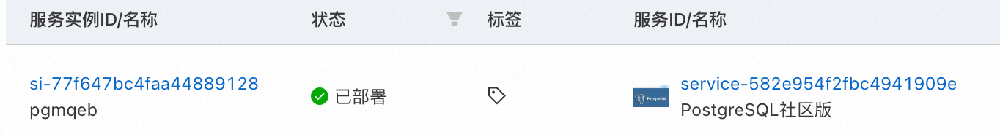

PostgreSQL 服务实例部署文档
PostgreSQL介绍
PostgreSQL是一种特性非常齐全的自由软件的对象-关系型数据库管理系统（ORDBMS），是以加州大学计算机系开发的POSTGRES，4.2版本为基础的对象关系型数据库管理系统。POSTGRES的许多领先概念只是在比较迟的时候才出现在商业网站数据库中。PostgreSQL支持大部分的SQL标准并且提供了很多其他现代特性，如复杂查询、外键、触发器、视图、事务完整性、多版本并发控制等。同样，PostgreSQL也可以用许多方法扩展，例如通过增加新的数据类型、函数、操作符、聚集函数、索引方法、过程语言等。另外，因为许可证的灵活，任何人都可以以任何目的免费使用、修改和分发PostgreSQL
计费说明
PostgreSQL在阿里云上的费用主要涉及： * 所选CPU云服务器的规格 * 磁盘容量 计费方式：按量付费（小时）或包年包月 预估费用在创建实例时可实时看到。
部署架构
部署架构采用ECS(云服务器)单机部署

RAM账号所需权限
| 权限策略名称 | 备注 |
|---|---|
| AliyunECSFullAccess | 管理云服务器服务（ECS）的权限 |
| AliyunVPCFullAccess | 管理专有网络（VPC）的权限 |
| AliyunROSFullAccess | 管理资源编排服务（ROS）的权限 |
| AliyunComputeNestUserFullAccess | 管理计算巢服务（ComputeNest）的用户侧权限 |
部署流程
部署步骤
- 单击部署链接，进入服务实例部署界面，根据界面提示，填写参数完成部署。
- 参数填写完成后可以看到对应询价明细，确认参数后点击下一步：确认订单

- 确认订单完成后同意服务协议并点击立即创建
- 等待部署完成后就可以开始使用服务，进入服务实例详情点击Address访问。  5.使用服务，可以通过资源找到对应的ecs登录，然后使用psql命令链接数据库

服务部署路径为/root/application/postgresql使用docker-compose部署
sudo su root
systemctl status postgresql
psql -h 127.0.0.1 -p 5432 -U pguser -d postgres

© 2009-2022 Aliyun.com 版权所有